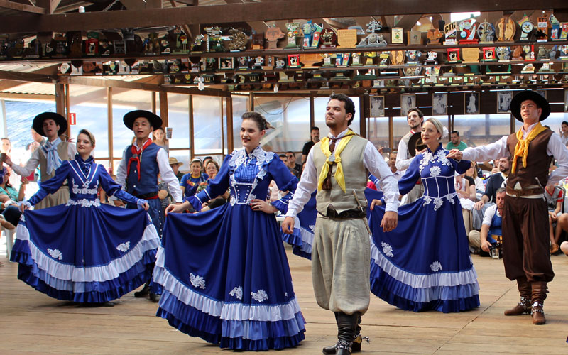

Folclore: Sepé Tiaraju: Participou da Guerra Guaranítica, em 1756, isso foi que fez ele se tornar lendário. Apresentava vigoroso porte físico e era filho de um cacique. Trazia um emblema lunar que brilhava a noite.
Vestimentas: Pilcha, bombacha, botas, lenço, chapéu, colete; saia, meias, sapato, bombachinha.
Influência: Italia, Argentina, Alemã e Polonia.
Costumes: Vestir-se como um gaúcho, fazer churrasco, tomar chimarrão.